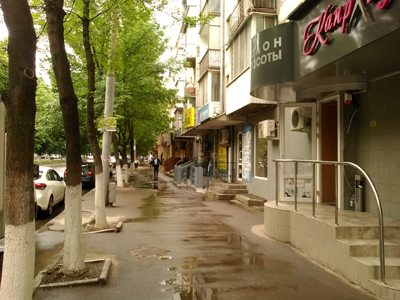
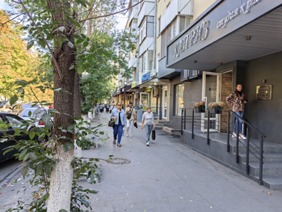
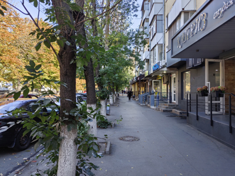

Улица, которая есть в любом городе России


Да, речь об улицах, названных в честь В. И. Ленина. В каждом городе и каждом или почти каждом поселке в России есть улица, проспект, бульвар или площадь Ленина. В Ростове-на-Дону так назван проспект. Он довольно широкий, во всяком случае, по местным масштабам. Здесь много зеленых насаждений, часть проспекта по середине разделяет целая отдельная полоса деревьев с газоном.
Проспект примечателен, в том числе, обилием небольших магазинов, заведений и офисов на первых этажах домов. Хотя надо заметить, что не весь проспект такой. Есть здесь и кусочек частного сектора, и довольно длинная часть территории университета (РГУПС). Но, условно говоря, в середине длины проспекта магазинчики, салоны красоты, офисы турфирм, аптеки, магазины одежды, кофейни и прочие-прочие идут одни за одним.
Мне всегда нравился проспект Ленина. Здесь как будто легко дышится. А еще проспект постоянно немного меняется благодаря обилию магазинов. Какие-то закрываются, какие-то появляются, меняется оформление, меняются вывески. Проспект сохраняет, скажем так, принцип своего внешнего вида, концепцию, но постоянно меняются детали, и прогуливаясь по нему раз в несколько месяцев, всегда можно заметить какую-нибудь новую деталь.


Но фото небольшой кусочек проспекта. Видно густую зелень деревьев и ряд магазинчиков на первом этаже одного из жилых домов. Первое фото сделано весной 2018 года. Новое — в сентябре 2026 года. Поменялось несколько вывесок, хотя организации остались те же, как например, аптека. Какие-то магазины, наоборот, поменялись полностью. Сменил вывеску и оформление фасада на более солидные салон «Каприз», как говорят сравнительно известный и популярный. Что подтверждает и то, что он до сих пор существует, и ремонт фасада. Заметно, что и некоторые балконы в доме отремонтировали.
Прежними остались обилие зелени и мое собственное особое ощущение во время прогулки по проспекту Ленина: будто я не в Ростове, а снова в путешествии, где-нибудь в Москве или в Кисловодске, почему-то проспект вызывает ассоциации сразу со всеми городами, где я успел побывать.

